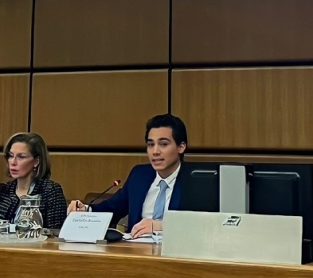

Research Analyst, Development Impact Group Research Coordinator, Gender Innovation Lab The World Bank
I am a researcher in economics and political economy. My interests include public economics, development, public policy, governance, and gender.
At the World Bank I work in the Development Impact Group, building global datasets of trade data with non-tariff measures, which have been featured in the World Development Report and the Accelerating Development: Ideas for Impact podcast. I also work on the MAGNET initiative of the Africa Gender Innovation Lab, which develops survey tools to measure women’s empowerment; our tools have been picked up by partners such as LSMS, IFPRI, GALLUP, Latinobarómetro, and Afrobarometer, among others. Before that I was a research assistant in development economics at the Universitat de Barcelona and a research fellow at the Regional Academy on the United Nations, working with UNODC.
I hold an MS in Institutions and Political Economy from the Universitat de Barcelona, where I serve as a program ambassador, and an MPP in Government and Public Policy from Universidad Icesi.
I have lived in Colombia, the Netherlands, Japan, Thailand, Italy, the United States, and Spain.

Data wrangling, psychometric analysis, and quality checks on survey and lab-in-the-field data.
Database creation and management, econometric analysis, charts for the World Development Report.
Extract trade measures from legal texts, cross-country analysis of drug-policy legislation, and sentiment analysis of attitudes toward social welfare policies.
Country case studies and technical documentation with interactive visualizations, reproducible pipelines for a trade panel data with 470M+ observations.
Household surveys programmed for fieldwork in sub-Saharan Africa and Asia.
Survey programming, randomization, and frequency checks to monitor data quality in the field.
Mapping visualizations and spatial analysis in R and GeoDa.
Causal forests to estimate heterogeneous treatment effects in randomized trials.